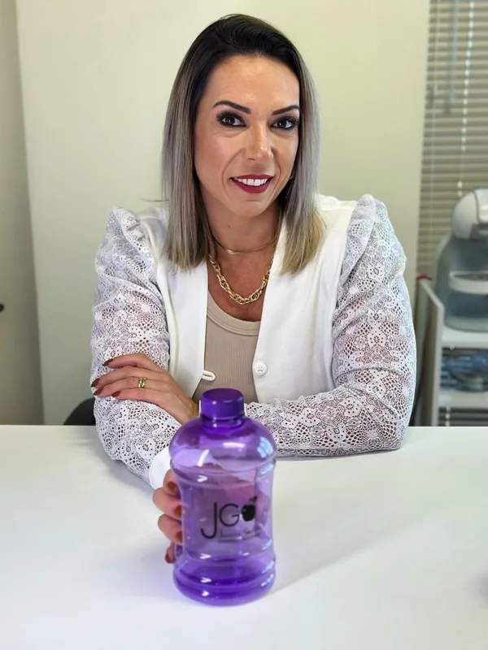
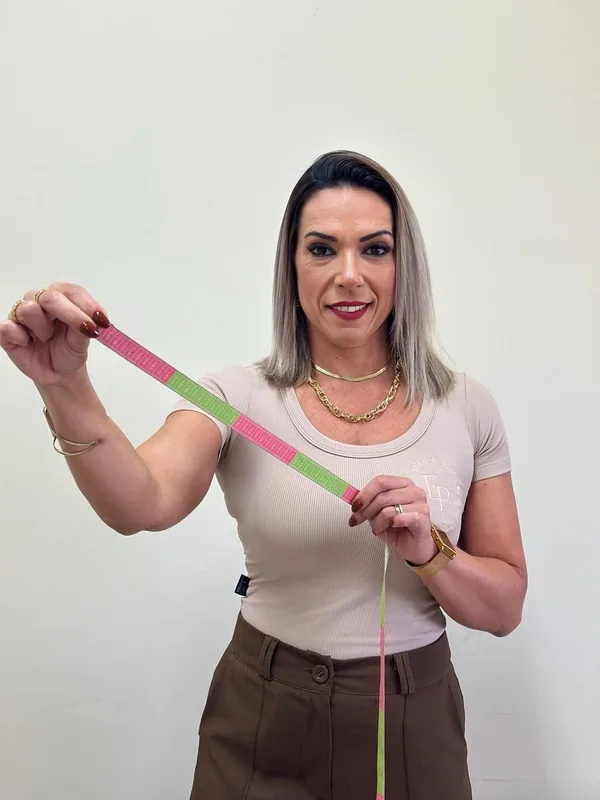

Plano 100% individualizado
Cada estratégia respeita seu objetivo, sua rotina e suas preferências alimentares.
Nutricionista Clínica e Esportiva
Clareza alimentar para você emagrecer, ganhar massa muscular e recuperar sua saúde — com acompanhamento individualizado, presencial em Sapucaia do Sul/RS ou 100% online.

Quem sou eu
Formada desde 2008 em Nutrição pela Unisinos, pós-graduada em Nutrição Clínica e Esportiva, especialista em Modulação Intestinal e com larga experiência em Emagrecimento e Saúde da Mulher.
Atendo em meu consultório particular, localizado no Prédio da Acis, em Sapucaia do Sul, e também de forma on-line para todo o Brasil e o mundo.
Sou uma das idealizadoras do Eliminando Pesos, uma plataforma de produtos digitais voltada ao emagrecimento feminino.
Minha missão é trazer Clareza Alimentar para potencializar os objetivos dos meus pacientes — seja qualidade de saúde, emagrecimento, ganho de massa muscular, hipertrofia ou o tratamento de alguma comorbidade.
Diferenciais
Cada estratégia respeita seu objetivo, sua rotina e suas preferências alimentares.
Atendimento em Sapucaia do Sul/RS ou por videochamada, com a mesma qualidade.
Plataforma Dietbox com lista de compras, substituições e mais de 150 receitas.
Dúvidas respondidas por chat no aplicativo e também pelo WhatsApp.
Prescrição individualizada sempre que o seu tratamento precisar.
Mais de 15 anos de prática clínica em emagrecimento e saúde da mulher.
Passo a passo
A primeira consulta dura entre 60 e 90 minutos — tempo para analisarmos com calma cada detalhe do seu tratamento.
Conheço sua rotina, hábitos alimentares, treinos, estudos, trabalho e possíveis doenças ou condições de saúde.
Analiso seus exames (ou solicito novos, se necessário) e faço a avaliação completa da composição corporal.
Montamos juntos o melhor plano, respeitando seu objetivo, suas preferências e sua realidade.
Você recebe o plano alimentar em até 3 dias úteis, com orientações, suplementação e manipulados quando necessário.
Utilizo a plataforma Dietbox, com aplicativo próprio para os pacientes e chat direto comigo — além do WhatsApp, sempre à disposição.
Um formulário detalhado (anamnese completa) pelo WhatsApp.
Exames, rotina, sintomas, histórico e objetivos.
Plano alimentar 100% individualizado, manual de orientações, de marcas e de avaliação física (peso, medidas e fotos), além de sugestão de suplementos e manipulados quando necessário, solicitação de exames, acesso ao app Dietbox e comunidade no WhatsApp.
Formulário de rastreamento mensal e ajustes estratégicos no seu plano.
Investimento
Escolha o formato que melhor se encaixa no seu momento. Todos os valores podem ser parcelados no cartão ou pagos via Pix.
1 consulta presencial ou on-line, com duração de 60 a 90 minutos.
R$280cartão 1x ou pix
Consultas presenciais ou on-line — intervalo entre consultas combinado conforme o objetivo.
4 consultas de 60 a 90 minutos
R$9504x sem juros ou pix com 5% de desconto
Recomendado
8 consultas de 60 a 90 minutos
R$1.7508x sem juros ou pix com 5% de desconto
12 consultas de 60 a 90 minutos
R$2.20010x sem juros ou pix com 5% de desconto
3 meses de acompanhamento
10x R$40,00no cartão ou R$347,00 no pix
Você pode continuar tentando sozinha(o)... ou pode ter 3 meses de acompanhamento estratégico comigo por menos de R$4 por dia.
Começar Plano TrimestralMelhor custo-benefício
6 meses de acompanhamento
10x R$60,00no cartão ou R$547,00 no pix
Você não precisa de mais uma dieta. Você precisa de direção, acompanhamento e constância.
Começar Plano SemestralDúvidas frequentes
A primeira consulta dura entre 60 e 90 minutos, tempo necessário para uma anamnese completa e para montarmos juntos a melhor estratégia nutricional.
Sim. Atendo pacientes de todo o Brasil e do mundo pela plataforma Dietbox e por WhatsApp, com a mesma qualidade do atendimento presencial.
O plano alimentar é enviado em até 3 dias úteis após a consulta, junto com orientações, prescrição de suplementos e manipulados quando necessário.
O suporte acontece pelo chat do aplicativo Dietbox e também pelo WhatsApp, sempre que você precisar tirar dúvidas.
Os pacotes garantem acompanhamento contínuo, com valor por consulta menor, consulta extra de dúvidas e presentes especiais — ideais para quem busca constância nos resultados.
O atendimento presencial acontece na R. Cap. Camboim, 32 - Sala 903 - Centro, Sapucaia do Sul - RS.
